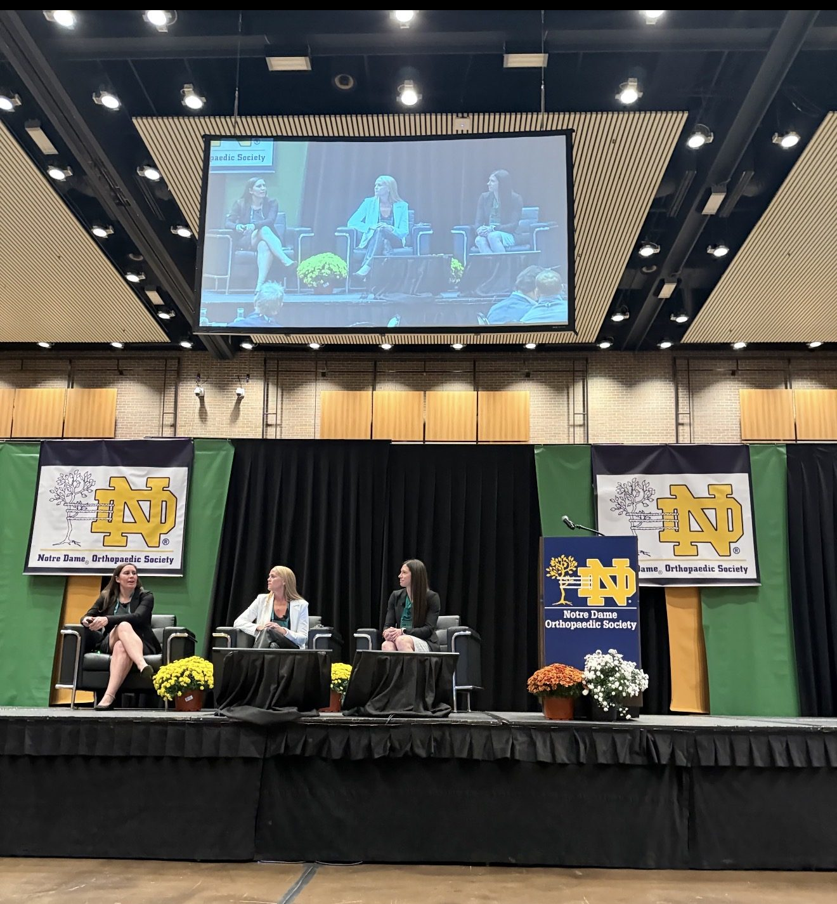
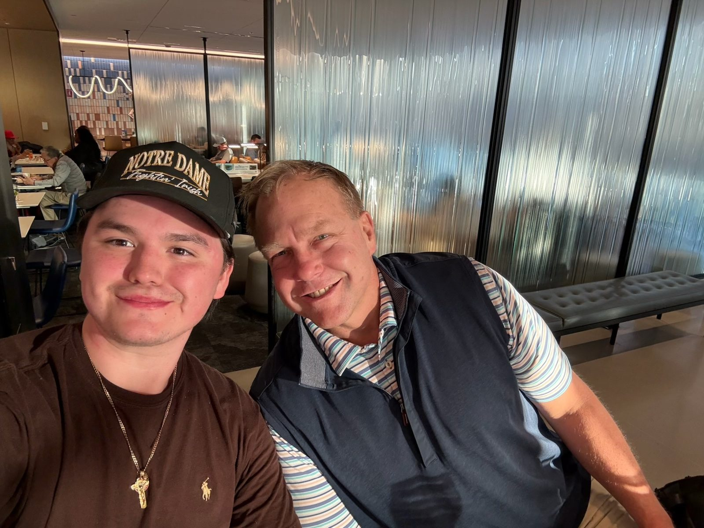
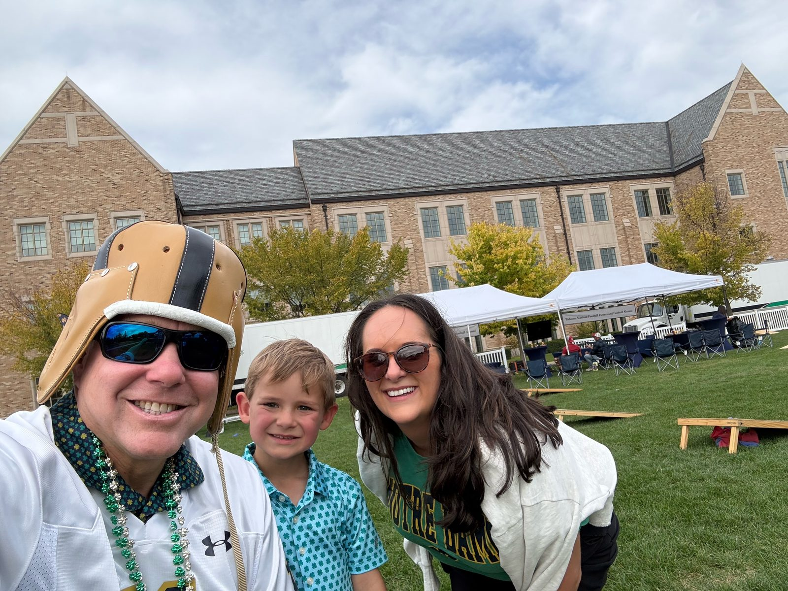
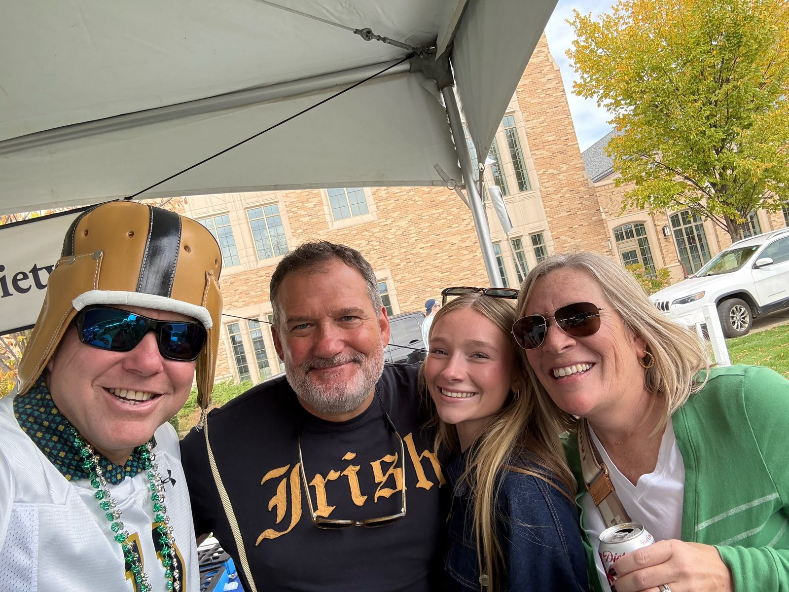
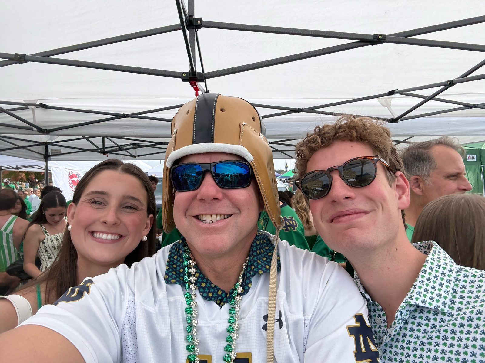
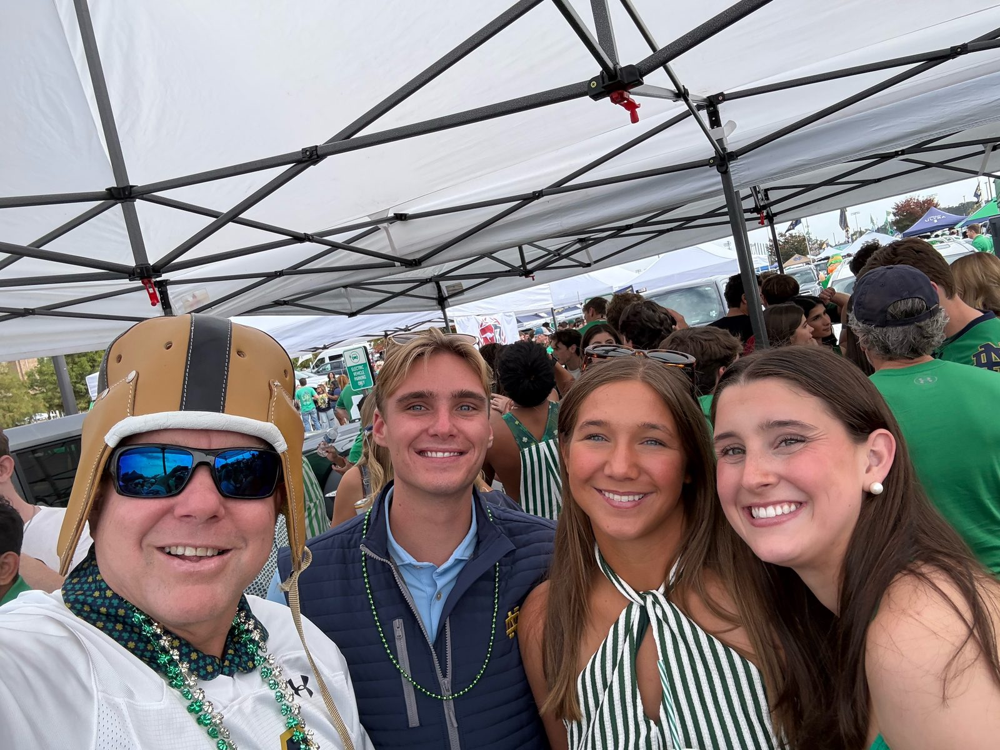

Episode 9: Notre Dame Orthopaedic Society
GOLFDOC takes you back to campus for the Notre Dame Orthopaedic Society 2026 weekend: highlights from the conference speakers, a Friday night out with friends near campus, and a game-day tailgate in the leather helmet.

Thirty years of NDOS
This fall the Notre Dame Orthopaedic Society celebrated its 30th anniversary, and it was, as always, one of the best conferences of the year. source
Friday night started at Compton Family Ice Arena, where GolfDoc and Dr. Jeff Yergler watched Notre Dame hockey shut out Niagara 4–0. Goaltender Nicholas Kempf made 24 saves as the Irish swept the opening weekend to start the season 2–0. source box score Dr. Yergler After the game, the celebration moved to the NDOS gala on the lawn on Notre Dame’s campus.
One of the symposium’s highlights was the women’s health session, “Fighting for the Female Athlete: Closing the Gap in Research, Performance and Injury Prevention,” with Karli Richards, DPM, Courtney Gleason, MD, and Megan Flynn, MD. Talks and presentations also looked back on the history of the Society, 30 years after Dr. Fred Ferlic started the symposium in South Bend. agenda source
GolfDoc was in the room for the foot and ankle session, where founder Dr. Fred Ferlic joined Dr. Steve Haddad, the agenda’s listed moderator, as co-moderator. It was a classic Michigan-versus-Notre Dame rivalry, with both of them pressing the speakers with pointed, brilliant questions and sharp commentary.
As always, NDOS is about more than the science of orthopaedic surgery. It centers on the values that join the University of Notre Dame and the calling of being a physician: compassion, leadership, integrity and spirituality.
Thank you to Dr. Christopher Balint and Heather Meyer-Schlipp for putting on another wonderful event, and thank you to all of our sponsors.
GolfDoc’s 2026 weekend





The 30th annual program
The Society’s 30th annual symposium, themed the “LegeNDary Experience,” ran Oct. 8–10, 2026. A Thursday kickoff dinner led into Friday’s full symposium at South Bend’s Century Center and a Saturday of golf, tailgating and Irish football. source source source
Program highlights
- Opening. Welcome to the 30th annual symposium. Mark Mighell, MD, on shoulder robotics, John Kelly IV, MD, on “Balance: Life and Orthopaedics,” and Adam Tenforde, MD, on shockwave therapy for in-season athletes.
- Notre Dame Experience panels. Karli Richards, DPM, Courtney Gleason, MD, and Megan Flynn, MD, on “Fighting for the Female Athlete”; Tony Romeo, Sam Romeo and Pat Eilers on identifying risk in our athletes and ourselves; and an invocation from football chaplain Fr. Nate Wills.
- Breakout sessions. Foot & ankle (moderator Steve Haddad, MD), sports medicine (moderator Christopher Balint, DO) and total joint (moderator Adam Cien, DO). Our Episode 5 guest Dr. Charles “Chip” Taunt Jr. presented TMINI handheld robotic knee replacement.
- Saturday. Golf at Warren Golf Course, a Library Lawn tailgate and Notre Dame vs. Stanford.
Program from the official NDOS 2026 agenda (ndorthosociety.org).
Irish 58, Stanford 7
On a warm afternoon in a sold-out Notre Dame Stadium, No. 3 Notre Dame (6–0) routed Stanford 58–7 on Oct. 10, 2026. source AP
- True freshman Jonaz Walton set a program freshman record with 181 rushing yards on 13 carries, including touchdown runs of 97 and 40 yards. source
- CJ Carr threw touchdown passes of 70 yards to Aneyas Williams and 30 yards to Elijah Burress. source
- Boubacar Traore strip-sacked Stanford’s quarterback on the first play of the game and later intercepted a pass. The Irish held Stanford to 202 total yards and 58 on the ground. source
Thank you to our sponsors
Thank you to all of the many sponsors who made the 30th annual symposium possible. GolfDoc also wants to give a special thanks to these six companies:
TriMed Orthopaedics
Fragment-specific fracture fixation for the upper and lower extremity, including the Wrist Fixation System 3.
Visit trimedortho.com →Medartis
Swiss maker (founded 1997, Basel) of APTUS hand, wrist and extremity fixation systems.
Visit medartis.com →
Arthrosurface
Motion-preserving joint replacement and HemiCAP® joint-preservation implants for the shoulder, wrist, knee and foot/ankle.
Visit arthrosurface.com →CONMED
Medical device manufacturer of surgical equipment and clinical solutions for healthcare providers worldwide.
Visit conmed.com →Arthrex
Trusted by surgeons for more than 40 years; a global leader in minimally invasive orthopedic products, clinical research and medical education.
Visit arthrex.com →Smith+Nephew
Global portfolio medical technology business making medical devices and advanced wound care products.
Visit smith-nephew.com →Logos are from each company’s official website; Medartis and Arthrex are shown as text wordmarks.